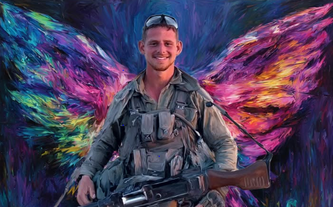

מרדף עד הכרעה בתל-סולטאן
חטיבת הנח״ל
סיפור גבורתו
סמל ראשון עמית פרידמן מ"כ בגדוד 932 של חטיבת הנח"ל, נפל בקרב בתל סולטן שברפיח, רצועת עזה.
בשבת כ"ב בתשרי, שמחת תורה תשפ"ד, 7 באוקטובר 2023, בשעה שש וחצי בבוקר, פתח ארגון הטרור חמאס מרצועת עזה במתקפת פתע על ישראל. בבוקר זה החלה מלחמה.
כשהחלה המלחמה עמית היה בעיצומה של ההכשרה, סיים אותה בהצטיינות, ויצא מיד לאחר מכן לקורס מ״כים.
ביולי 2024 שב לגדוד כמפקד כיתה. חייליו נקשרו אליו מיד וראו בו דמות נערצת וכריזמטית. יחד עמו נכנסו לקרבות ברצועת עזה.
ביום שלישי 27 באוגוסט 2024 יצא עם הכוח לפשיטה מבצעית בשכונת תל סולטן ברפיח. עמית זיהה חוליית מחבלים, הזהיר את חבריו, פתח באש וחתר למגע. בקרב שהתפתח לחם בגבורה עד שנפל.
סמל עמית פרידמן נפל בקרב ביום כ"ד באב תשפ"ד (27.8.2024). בן תשע-עשרה בנופלו. הובא למנוחות בחלקה הצבאית של בית העלמין ביהוד.
מרדף עד הכרעה בתל-סולטאן
חטיבת הנח״ל